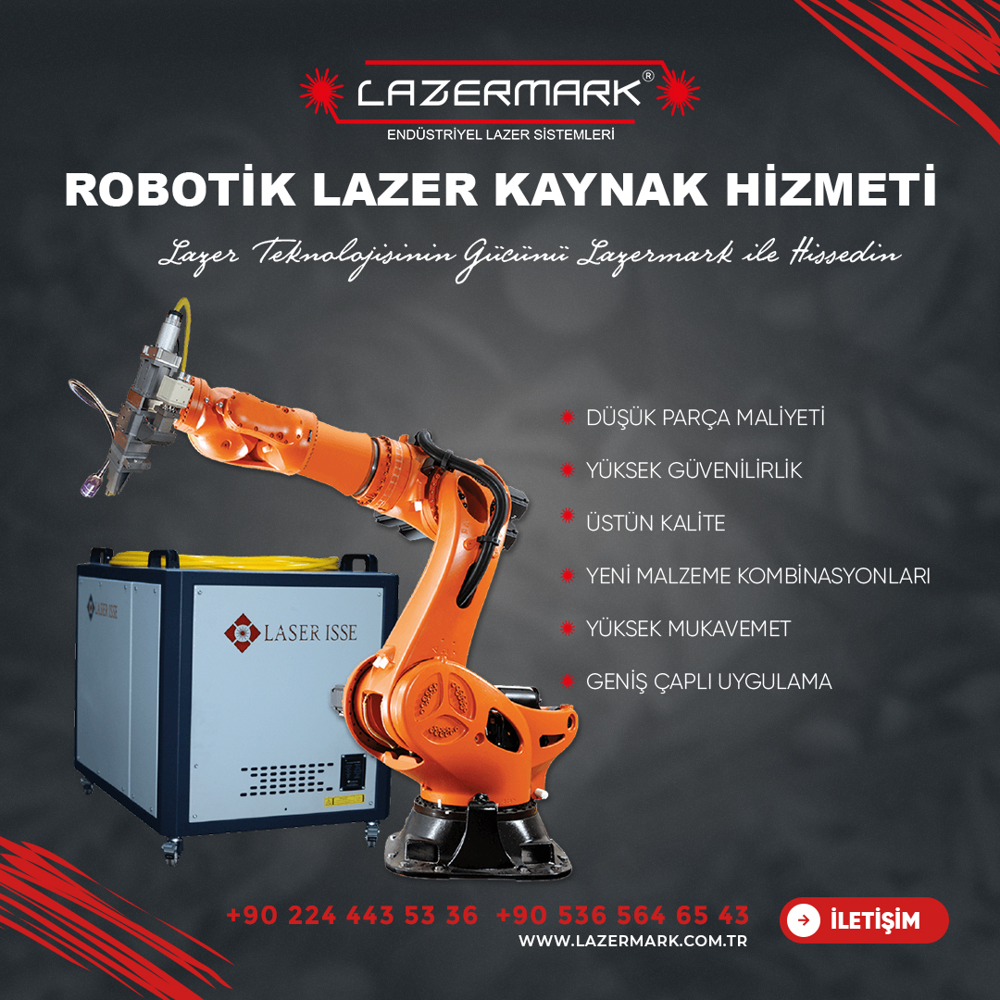
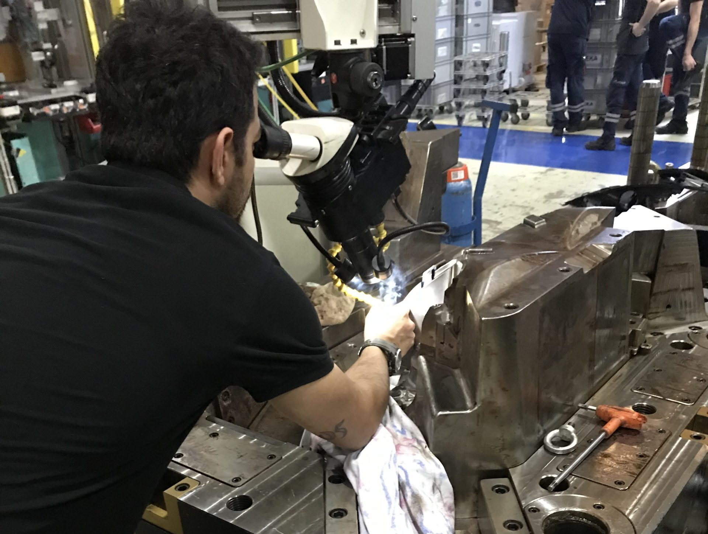
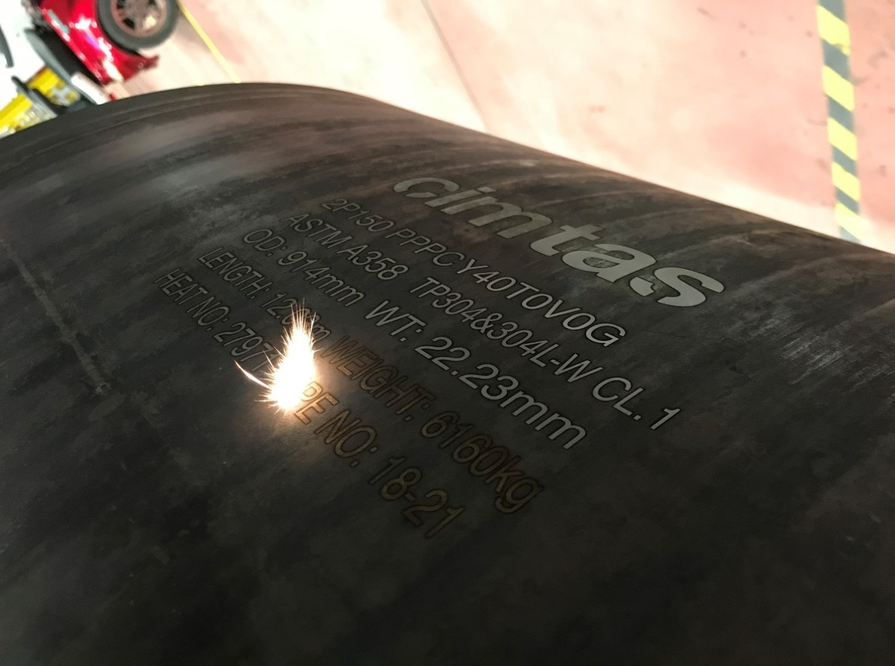
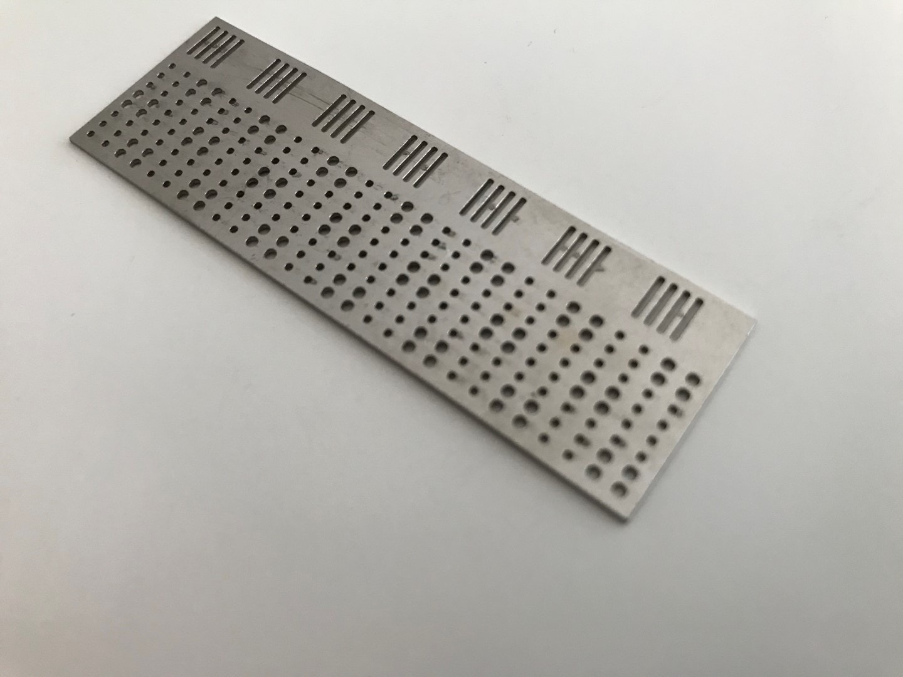
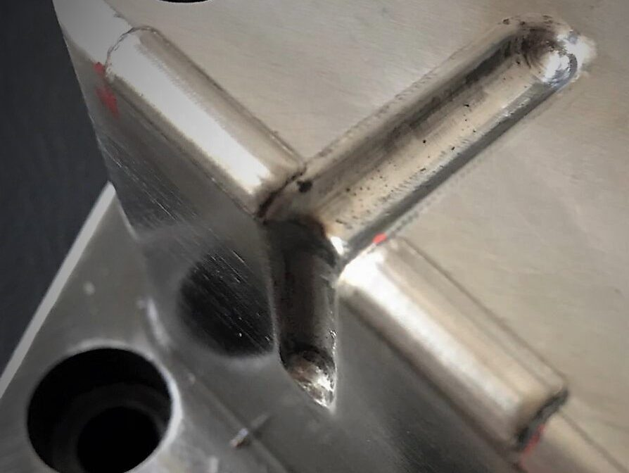
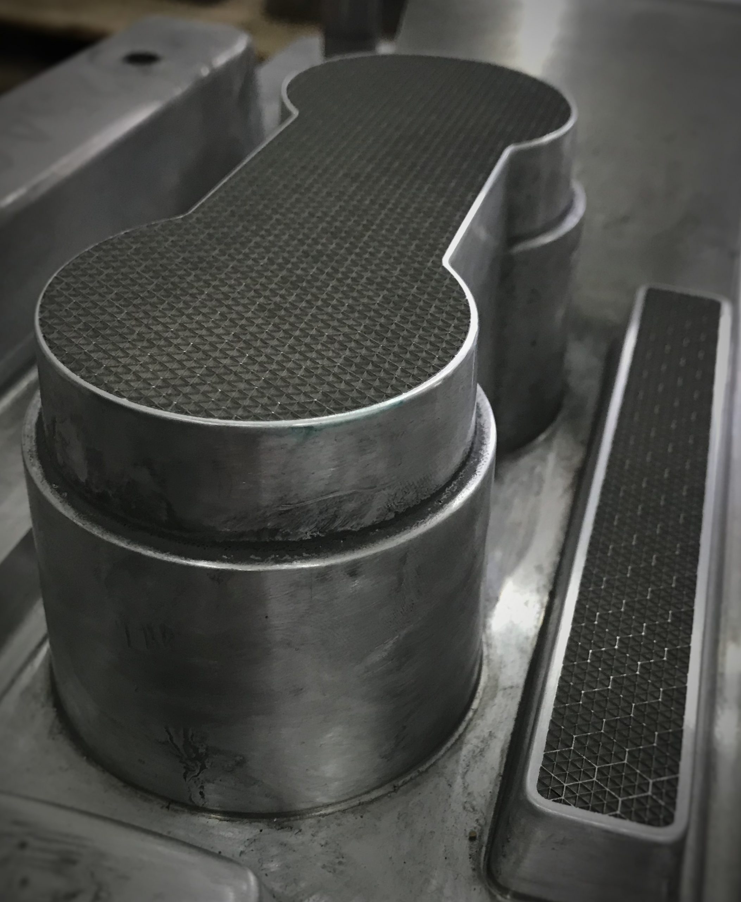
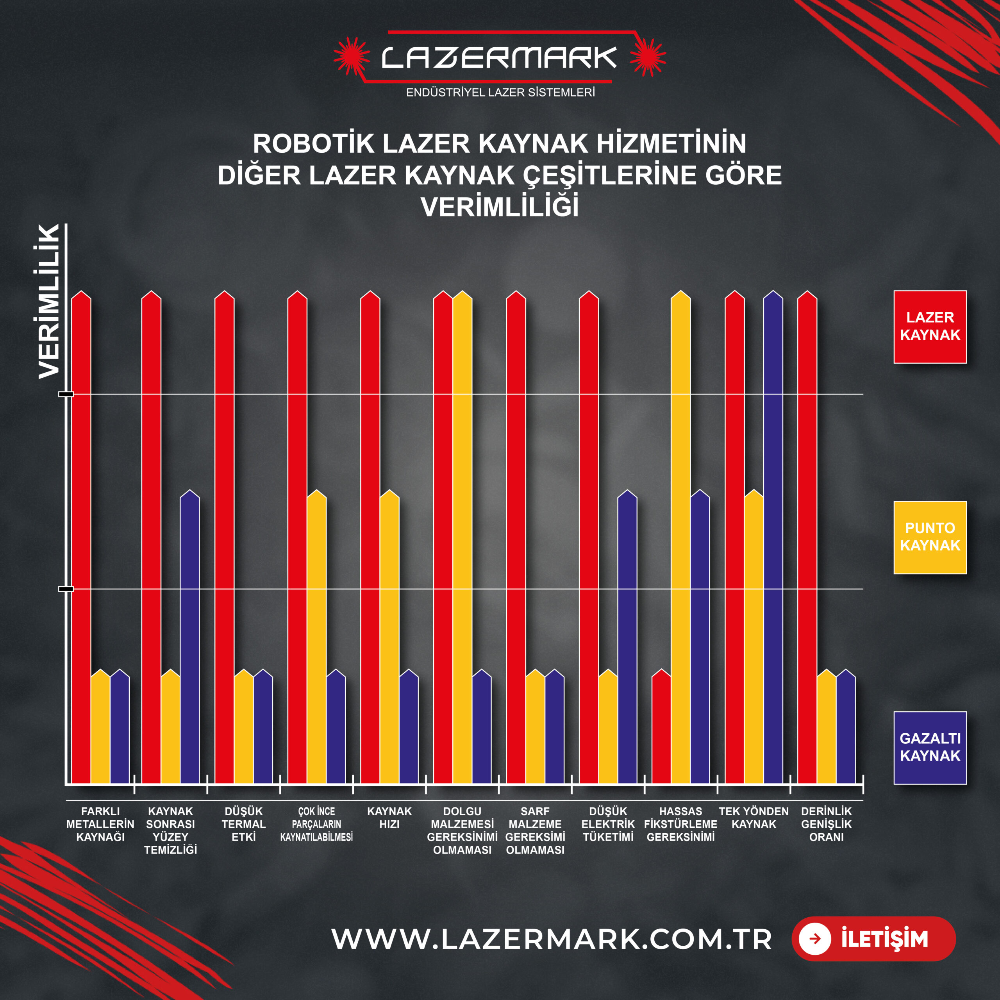
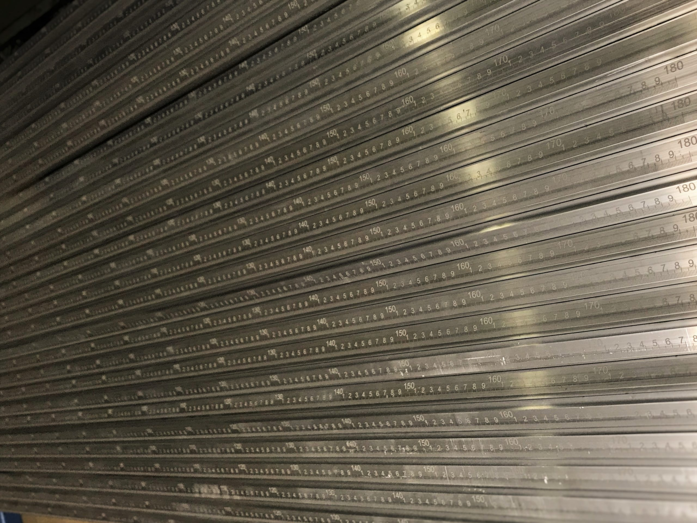

Alman Vision Lasertechnik yetkili distribütörü ve LaserIsse sistem partneri olarak; 0,1 mm hassasiyetle kalıp ve robotik lazer kaynak, 0,01 mm mikro lazer kesim, 3D derin gravür markalama, fabrikanızda mobil lazer servisi ve anahtar teslim lazer makine kurulumu sunuyoruz.




Düşük adetli veya acil kalıp revizyonlarınızı Bursa merkezimizde ve mobil servis aracımızla karşılıyor; seri üretim hatlarınız için anahtar teslim lazer makineleri kuruyoruz.

Otomotiv, havacılık ve savunma sanayi kesme-form ve plastik enjeksiyon kalıplarındaki aşınma ve modifikasyonların; ön ısıtma ve gerilim giderme gerektirmeden, birebir uyumlu özel lazer kaynak telleriyle 0,1 mm hassasiyetle kaynatılması.
Atölyemize taşınamayacak kadar büyük, ağır tonajlı veya gizlilik gerektiren kesme, form ve plastik enjeksiyon kalıplarınıza; teknik donanımlı Mobil Servis Aracımızla doğrudan fabrikanızda müdahale ederek nakliye ve duruş süresini sıfırlıyoruz.
Seri üretim otomotiv ve endüstriyel parçalarınız için esnek optik fiberlerle yönlendirilen yüksek enerjili robotik lazer kaynağı: İnce kaynak dikişi, çok yüksek hız ve minimum termal deformasyon.
Tüm metal, organik ve inorganik malzemeler üzerine barkod/QR izlenebilirlik markalaması, cetvel/ölçek markalama ve kalıplar üzerinde dişi/erkek 3 boyutlu derin yazı ve logo gravür işlemleri.
Çelik, alüminyum, magnezyum, gümüş, altın ve pirinçte 0,01–1,5 mm; akrilik, teflon, fiber, deri ve kauçukta 0,01–12 mm hassas kesim ve polyester iplik düzesi (melt-spinning) mikro delik işleme.

Kalıplardaki karbon, silikon, kauçuk, pas ve boya katmanlarının temassız pulsed lazerle temizlenmesi ve lazer prosesleriniz için 3D eklemeli imalat / fikstür üretimi.
Farklı metallerin birleştirilmesinden kaynak sonrası yüzey temizliğine kadar 11 kritik üretim parametresinde karşılaştırmalı performans:


__trashed (Çöpe Atılmış) Kırık Sayfa Linkleri Kurtarıldı: Mevcut sitenizde üst menüdeki Hakkımızda, Robotik Lazer Kaynak, Lazer Markalama, Lazer Kesim, Mobil Lazer Hizmeti ve Lazer Sistemlerimiz bağlantılarının tamamı /hakkimizda__trashed/, /lazer-kaynak__trashed/ gibi silinmiş bağlantılara gidiyor ve ziyaretçilere 404 hatası veriyordu. Arka planda kalan Vision Lasertechnik, LaserIsse ve PDF katalog verileriniz kurtarılarak bu yeni siteye eksiksiz işlendi.
/lazer-temizlik-sistemleri__trashed/ adresine yönleniyordu; her iki sistem grubu ve PDF katalogları ayrıştırıldı.
<img src="2178">) Temizlendi: Mevcut ana sayfanızın altındaki karuselde resim URL'leri yerine ham veritabanı numaraları (src="2178", src="2176", src="2181") kaldığı için oluşan kırık resim ikonları gerçek Bursa uygulama galerisiyle değiştirildi.